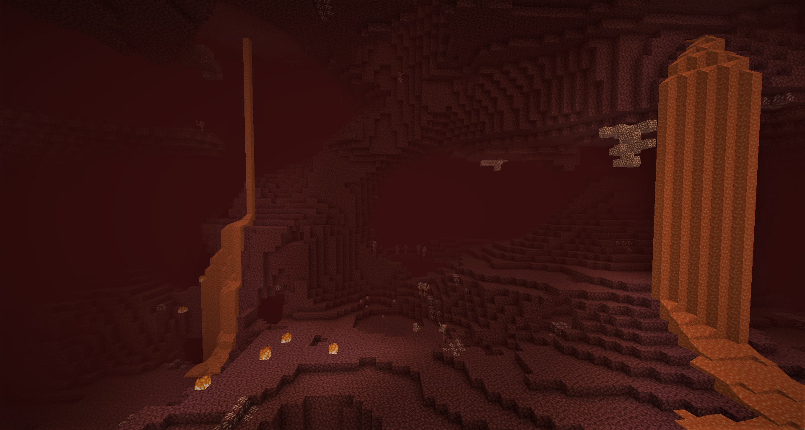

Overwereld
Dit is de wereld waar de speler begint en waar het personage leeft. De normale wereld bestaat uit verschillende zogeheten biomes, elk met hun eigen soort landschap en begroeiing. Zo zijn er gemengde loofbossen, berken-, eiken- en dennebossen, oerwouden, woestijnen, berglandschappen, savannes, taiga's en oceanen waarin soms een mushroom island voorkomt. In de normale wereld zijn er ook verschillende weersomstandigheden: het kan regenen en onweren en in sommige gebieden sneeuwen.
In deze landschappen komen zo nu en dan door het spel gegenereerde bouwwerken voor, zoals dorpjes, woestijn-, jungle- en onderwatertempels en onder de grond zogeheten spawners waarin vijandelijke mobs ontstaan. De dorpjes worden bevolkt door dorpelingen, waarmee de speler handel kan drijven door dingen te ruilen.
Nether

Sinds Halloween 2010 is het mogelijk om naar de Nether te reizen. De Nether wordt - net zoals de gewone wereld - willekeurig gegenereerd. Om in de Nether te komen moet de speler een portaal maken van obsidiaan en dat in brand steken, waardoor dan een paars portaal ontstaat. Als de speler gedurende vijf seconden in dat veld staat reist hij naar de Nether. Op de plek waar men terechtkomt in de Nether staat een portaal waarmee men weer terug naar de normale wereld kan reizen. Dit portaal ziet er hetzelfde uit als het portaal om naar de Nether toe te gaan. Er zijn minder verschillende soorten blokken aanwezig in deze dimensie dan in de normale dimensie.
Daarnaast zijn er verschillende wezens die leven in de Nether, zoals: 'Ghasts' (vliegende, vuurbalspuwende wezens), 'zombievarkens' (passief totdat ze worden aangevallen en als de speler er een raakt komen ze allemaal op hem af), Blazes (vliegende beesten die vuur naar de speler toe spuwen en die afkomstig zijn van monsterspawner), 'Wither Skeletons' (Wither Skeletons zijn zwart van kleur, in de normale wereld is er een witte variant die 'Skeletons' worden genoemd), en 'magmakubussen', een soort slijmkubus die hoog kan springen met een springveer.
Vanaf Beta 1.6 is de Nether ook toegankelijk in multiplayer.
In 2020 is de Nether-update gereleased, wat nieuwe mobs & blokken heeft toegevoegd.
The End

Sinds de vierde pre-release van Beta 1.9 kan men naar The End reizen. Het is een duistere wereld van vliegende eilanden van endsteen. Op het hoofdeiland waar men aankomt staan pilaren van obsidiaan, op de andere eilanden groeien chorusplanten en kunnen zogenaamde End Cities genereren. Verder zijn er veel endermannen, en sinds Beta 1.9 prerelease 6 is er ook een Enderdraak, een nieuwe soort tegenstander. Spelers kunnen The End alleen verlaten door dood te gaan of de Ender Dragon te verslaan. Als de speler voor de laatst genoemde optie kiest dan heeft de speler het spel "uitgespeeld" en volgt de aftiteling. Hierna kan men door het ontstane Endportaal weer terugkeren naar de gewone wereld.[3]
Aanvankelijk was ontwikkelaar Persson medio mei begonnen met het ontwikkelen van een droomwereld, gedoopt tot de Sky Dimension.
Hoewel de code al volledig functioneel was, gaf Persson aan dat hij het er lelijk uit vond zien.[4] Aan de screenshots te zien waren de grondstoffen vrijwel hetzelfde als in de normale wereld. Persson speculeerde dat zodra de speler ging slapen in zijn bed, er een geringe kans was dat hij of zij in de droomwereld, oftewel de Sky Dimension terecht zou komen. Aan de schermafbeeldingen is ook te zien dat de Sky Dimension ver boven de wolkenlaag ligt, te ver om te bereiken in de normale wereld. Wellicht zou de speler in theorie gewoon van een zwevend eiland naar de normale wereld kunnen springen, en héél misschien ook weer terug. In de toekomst heeft Persson wel het plan om de Sky Dimension toch volgens het oude concept in te voeren, dit in tegenstelling tot veel spelers die denken dat The End de Sky Dimension vervangt. Vanaf Beta 1.6 zat de Sky Dimension ook daadwerkelijk in de broncode van Minecraft, maar kan nog niet op legale wijze worden betreden. Wel is er een modificatie te downloaden die één bestand in de broncode verandert, zodat de werelden standaard als een Sky Dimension worden gegenereerd.